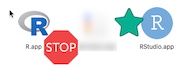
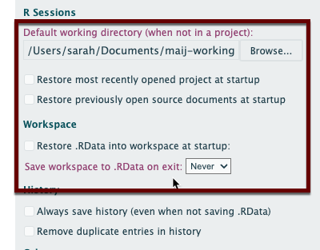

6 Installing R and RStudio
6.1 Install R and RStudio
R is the programming language itself, and has to be installed first. Andrew Heiss has called it the “engine” behind your work. RStudio, made by the company posit.co, is the way we’ll interact with the programming language. Install it second. Heiss calls it the “fancy car” that you drive.
Most students prefer to install the software on their own laptops, but there are other options in the backup plan section.
Follow along with the tutorial in this link to install R, RStudio and the package called the tidyverse on your computer.
https://learnr-examples.shinyapps.io/ex-setup-r/#section-welcome
The video is a little old. Here are the differences today:
There are now two versions of R for Mac: One for older (pre-2022) computers with an Intel chip, and another called ARM64 for Macs with M1 or M2 chips. Be sure to choose the one for your computer. You can tell which one you have by clicking on the apple symbol, and choosing “About this Mac”. If it says “Intel”, then you have the older version.
The download link for RStudio is now https://posit.co/download/rstudio-desktop/
If you go all the way through the tutorial, installing the tidyverse will take a while and look like it’s stuck. It’s not. Just get some coffee and come back in 10 minutes. This only has to be done once.
This should be easy, but don’t spend more than about 30 minutes trying to get this to work, and don’t try to Google your way out of any problems – the answers could be old, wrong, or make it harder. This isn’t worth your time or frustration. Contact me if there’s any problem and we’ll work it out.
Details on installing R
Link to find your version: https://cloud.r-project.org/. As of December 2023, the version is 4.3.
Mac OS:

Parts of RStudio depend on “command line tools” in a Mac. If you’re asked to install it, say “Yes”. If you get a warning or error about it, ask me to help you. It’s a simple fix. RStudio will actually work without it, but you’ll get a lot of annoying warnings.
Windows 10/11:
You only need the “base” version for our class. You do not need to install RTools. Try to install it as an administrator – we’ve had a little trouble finding the right paths when it’s installed at the user level.
Backup plan
Labs in school
You do not need to own a computer to take this class. R and RStudio should be set up properly n our classroom and the lab in Cronkite 320. ASU’s computing sites such as the lab in UCENT L-102 across from Cronkite also have the basic software installed but you may need to tweak it each time you sign on. Let me know if you are using university labs and I’ll help you make it a little more efficient.
Posit cloud
Posit Cloud allows you to use R and RStudio without installing it on your computer. Use it as a last resort. Believe me, this will be a pain, but it can work to get you started. We’ll work together to find a solution longer term.
Some limitations:
- You’ll have to upload everything you want to use to the cloud, then download the final (saved) versions when you want to turn them in.
- Historically, it hasn’t worked very well on the Quarto documents that we’ll be using. You might not be able to see your finished document, which is a big deal for us.
- You can only use 1GB RAM - this won’t be enough for some projects.
- You only get 25 hours per month to use it. During the key part of our course, you should run out of time and won’t be able to access your work until you pay. (The $5/month plan would work.)
- You have to remember to save your work and periodically restart R. It doesn’t remind you and you might lose everything by closing out a tab. If you don’t save and process your documents right before turning in your work, there’s a good chance I’ll see an earlier draft.
- You will have to upgrade to a paid account (minimum $5/month) if you try to use it for the whole the semester. I’ve never understood the plan costs and limits – they’re quite strict, and you won’t be able to log into your account if you try to go beyond them.
6.2 Set up RStudio for data reporting
Staying organized is one of the challenges of data reporting – you’re constantly re-downloading and re-jiggering your analysis and it’s easy to get your material separated. This setup helps ensure that you always know where to find your work and can move it to another comptuer seamlessly.
Before you start, decide on a folder you’ll use to store all of your R work.
Create a folder called
maij-workingwithin your Documents folder, or another folder that you will use for your coursework. Make sure you know how to find it.Start up RStudio (NOT R) , and choose
Tools->Global options(in a Mac)
Under Tools > Global options, UN-check all of the options to save and load .Rdata and other files on startup, and choose “Never” for saving the workspace.1

Here’s a video of what you should do. It also gives you a little reminder of how your computer is organized in folders.
This makes sure that you don’t depend on a previous session; your programs are self-sustaining. Posit Cloud users don’t have this, and they often forget to save.↩︎